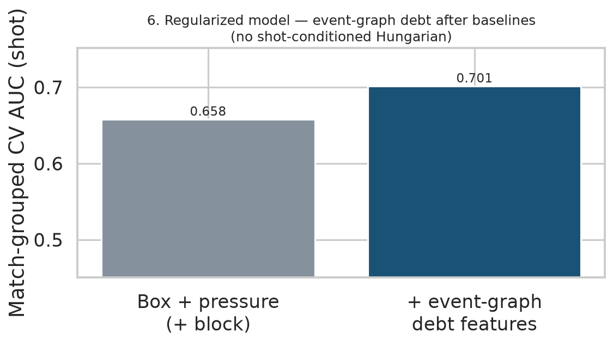
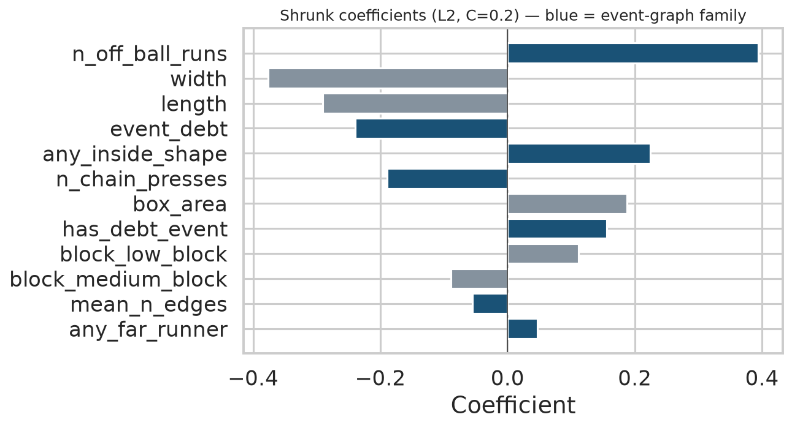
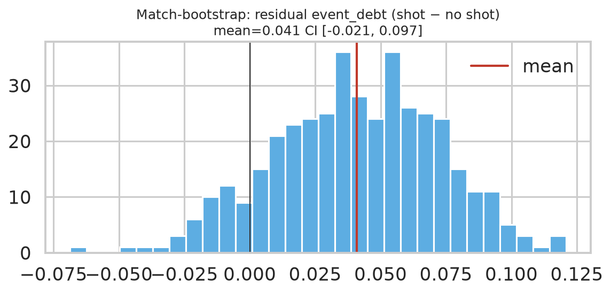

Question: after OOP box (area/width/length), mean on-ball pressure, and block height,
do event-graph debt features (press chain, far-side runner, ball inside shape)
still separate shot phases? Hungarian free attackers are not in this model —
those frames are only labeled at shots/goals.
Phases: 5,669 across 20 matches
Baseline AUC: 0.658
Baseline + event-graph AUC: 0.701
(Δ=+0.044)
Residual event_debt (shot − no shot), match bootstrap mean
0.041
CI [-0.021, 0.097]
— excludes 0: False



Largest |coefficients|
Feature
Family
Coef
n_off_ball_runs
graph
0.394
width
baseline
-0.376
length
baseline
-0.291
event_debt
graph
-0.239
any_inside_shape
graph
0.224
n_chain_presses
graph
-0.190
box_area
baseline
0.188
has_debt_event
graph
0.156
block_low_block
baseline
0.111
block_medium_block
baseline
-0.089
AUC gains can be small under strong shrinkage — that is the point on 20 matches.
Prefer residual CIs and film lists over claiming a large predictive leap.